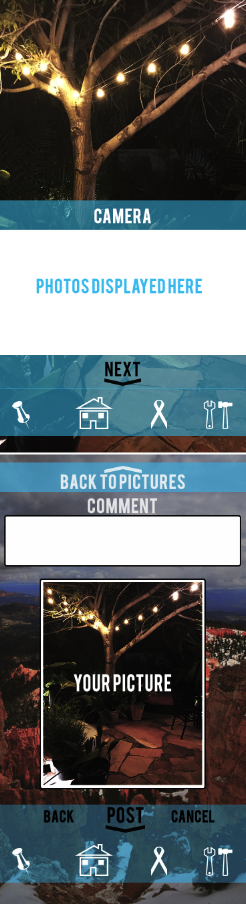

Home
Page To Post Your Goals
This “Trees and Smoke” design was for a competition that I got invited to participate in during my junior year. For the competition, I had to make a design that shows the connection between graphic and web designers. For this design, I was required include the circle and use a specific size. I utilized the red, green, and blue colors, which represents the RGB color model. I demonstrated how those colors come together in web and graphic design to make new colors.